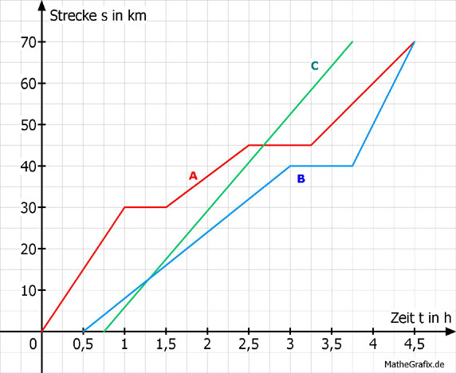

Lineare Funktionen Aufgabe 64 3 Radfahrer fahren zu einem 70 km entfernten Ziel. Radfahrer 1 macht unterwegs 2 Pausen. Radfahrer 2 startet als Letzter. Radfahrer 3 macht eine Pause. a) Welches Diagramm gehört zu welchem Fahrer? b) Mit welcher Durchschnittsgeschwindigkeit fahren sie zum Ziel? c) Mit welcher Geschwindigkeit hätte Fahrer 1 auf dem letzten Abschnitt fahren müssen, um zur selben Zeit wie Fahrer 2 am Ziel einzutreffen? d) Wie lautet die Gleichung der Geraden für den letzten Abschnitt von Fahrer 3? (Abhängigkeit der Strecke s von der Zeit t).  a) Fahrer 1 macht 2 Pausen, dabei ändert sich die Kilometerzahl nicht. Dies trifft für A zu. Fahrer 2 fährt als Letzter ab, nämlich bei 0,75 h. Dies zeigt Gerade C. Fahrer 3 macht eine Pause. Dies trifft für B zu. b) Abgelesen: Fahrer 1 braucht 4,5 h für 70 km. 70 km v = --------- = 15,6 km/h 4,5 h Fahrer 2 braucht 3 h für 70 km. 70 km v = --------- = 23,3 km/h 3 h Fahrer 3 braucht 4 h für 70 km. 70 km v = --------- = 17,5 km/h 4 h c) Abgelesen: Er hätte 25 km in 0,5 h zurücklegen müssen. 25 km v = -------- = 50 km/h 0,5 h d) Abgelesen: 30 km Steigung m = --------- = 40 km/h 0,75 h Ein Punkt abgelesen P(3,75|40) t s Eingesetzt in s = m * t + b 40 = 40 * 3,75 + b 40 = 150 + b | -150 b = -110 s = 40 * t - 110